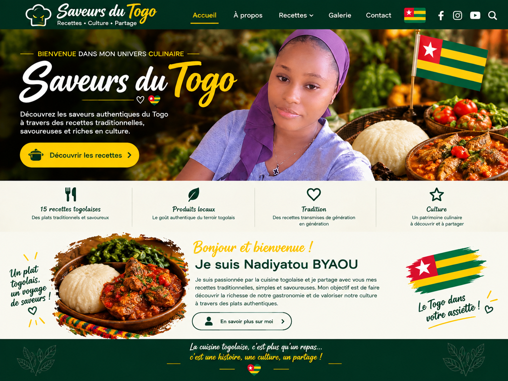

BIENVENUE DANS MON UNIVERS
Je suis Nadiyatou BYAOU, passionnée par la cuisine et par la richesse de la culture togolaise.
À travers ce site, je souhaite partager avec vous des recettes traditionnelles togolaises, simples, savoureuses et accessibles.
Mon objectif est de faire découvrir la richesse de notre gastronomie et de valoriser notre culture à travers nos plats.
Bienvenue dans mon univers culinaire ! 🇹🇬